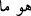

Molla Camî der ki:
Yari ağyarda görmek Câmî’nin meşrebidir
Gayr/yabancı kimdir ki; O’nun varlığından başka bir şey yoktur
Mahlukât hakkında nâfiz ve geçerli “hüküm O’nundur ve siz ancak” başkasına değil
“O’na döndürüleceksiniz.” Dirilmeden (ba’s) sonra hak ve adâletle karşılık görmek
için O’nun huzuruna çıkarılacaksınız. Kimin Allah’a dönüşü istemeyerek (ıztırâri)
olursa, Cebbâr ve Kahhâr olan Allah’ı karşısında bulur; ve ona hesabını eksiksiz verir.
Kimin de dönüşü isteyerek (ihtiyârî) olursa, Afüvv (çok af edici) ve Gaffâr (çok
mağfiret edici) olan Allah’ı karşısında bulur ve ona da mükâfatını kat kat verir. Buna da
ancak, taayyün hicâbının ortadan kalkması ve varlık benliğinin erimesi suretiyle fenâdan
önce fenâya ulaşarak nâil olunur.
Şeyh Sâdî der ki:
Ey kardeşim, madem ki sonunda toprak olmak vardır
O hâlde toprak olmadan önce toprak gibi ol
Avârif şerhinde denir ki: Allâh Teâlâ âyet-i kerîmede, bütün eşyanın varlığının daha
dünyada iken kendi zâtı hakkında helâk olucu olduğunun bilinmesi için “
(helâk
ederiz)” buyurmadı. Bu hâlin müşâhedesinin kıyamet gününe havâle edilmesi, hicab ehli
hakkındadır.
(Ey Rabbim) Sen varken, benim
“Ben varım” demem doğru değildir.
Şeyh Ebü’l-Hasen Bekrî (k.s.) der ki: Allah’ın dışındaki şeylerden Allah’a istiğfar
et. Çünkü bâtılın, li-zâtihî varlık (vücûdu) olduğunu kabul etmekten (isbât) istiğfar
edilir. Ârif, mevhum bir varlığa iltifat etmez. Onu tevhid hakikatleriyle yok eder (ifnâ);
zâtî vahdet ve ilâhî hüviyet sırrı ile hakikate erer.
Keşfü’l-esrâr’da der ki: “ (Hû)” harfi, tek olan Allah’a işâret olan bir harftir. Ne
isimdir, ne de sıfattır. Ancak Allah’ın tekliğine işârettir; bu yüzden O’na isimdir ve
sıfattır. O tek olan harf “hâ”dır ve nefsin karargâhıdır. Görmüyor musun, tesniye
yaptığında “
(humâ)” dersin, “
(huve mâ)” değil. Böylelikle bilirsin ki o, tek olan
Allah’a delîl olan tek bir harftir.
Söylediğin bütün isim ve sıfatları dilden söylersin, ama “ (Hû)” böyle değil. “
(Hû)”, canın ortasından çıkar, samimi sîneden ve gönlün dibinden geçer; dilin ve
dudağın onunla bir işi ve ilgisi yoktur. Din yolunun erleri ve aynelyakîn makamının
efendilerinin gönülleri saftır, himmetleri yücedir ve sîneleri ağyardan arınmıştır. İşte
bunların sînelerinin dibinden bu kelime çıktığında, onların maksadları ve bundan
anladıkları Hak Teâlâ’dan başkası değildir. Hüviyetin hakikatinin açılmadığı böyle bir